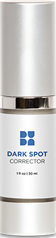
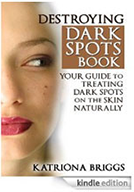
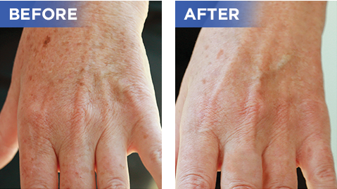
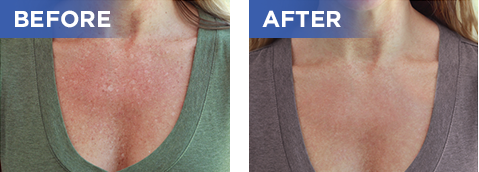
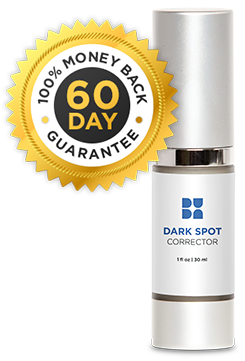

Age spots, sun spots, liver spots, and acne marks are an issue that about 90% of us will experience as we age.
Beverly Hills MD Dark Spot Corrector provides a safe and effective solution so that you can get back to the smooth, healthy, youthful skin you've been looking for.

BEVERLY HILLS MD DARK SPOT CORRECTOR
...uses rare, effective natural ingredients in fast-absorbing gel formula to:
Diminish the appearance of dark spots
Give skin a brighter, more even look
Help protect skin against future damage, including UV damage
Deliver results safely, without harsh ingredients
ORDER RISK-FREE NOW
►
3 BOTTLES
$147.00 + Free Shipping
$49.00/bottle
2 BOTTLES
1 BOTTLE
It's not just the career tanners out there who find that the sun has caused their skin to become spotted [...] You can still find that the sun has damaged your skin to the point of developing dark melanin spots - even if you've always kept covered up and protected in the sun.
-Katrina Briggs, Author of Destroying Dark Spots: Your Guide to Treating Dark Spots on the Skin Naturally

Skin color homogeneity, driven by melanin and hemoglobin distribution, influences perception of age, attractiveness, health, and youth.
-P.J. Matts, B. Fink, K. Grammer, and M. Burquest, from the Journal of American Academy of Dermatology
Facial hyperpigmentation can cause significant cosmetic disfigurement with subsequent emotional impact. [...]Ascorbic acid, also known as vitamin C, has antioxidant properties and reduces melanogenesis[.]
-N.A. Vashi, MD and R.V. Kundu, MD from the British Journal of Dermatology
TESTIMONIALS
Leigh Anne tried Beverly Hills MD Dark Spot Corrector and saw amazing changes in her skin. Watch the video to hear her story!
Based on individual results. This testimonial does not constitute typical results nor do we claim otherwise.

I have terrible age spots on my hands that I've always tried to cover up with makeup. I started using Beverly Hills MD dark spot corrector a few weeks ago and I've seen great improvement! I don't have to use concealer on my hands anymore. Thank you so much!
-Tatiana D. from Los Angeles, CA
Based on individual results. This testimonial does not constitute typical results nor do we claim otherwise.

I suffer from sun sports. I ordered Dark Spot Corrector for the first time a month ago and I'm really impressed with how much lighter my spots look already. This is definitely the product I've been looking for.
-Eliza, 42, Wilmington, NC
Based on individual results. This testimonial does not constitute typical results nor do we claim otherwise.
ASK DR. LAYKE
ABOUT DR. LAYKE
Dr. John Layke, DO is a practicing plastic surgeon with the Beverly Hills Plastic Surgery Group. He received his training at the Long Island Plastic Surgery Group, the largest and oldest private practice group in America. Dr. Layke is board certified by the American College of Surgeons in General Surgery.
What is Beverly Hills MD Dark Spot Corrector?
BHMD Dark Spot Corrector is a gel formula that utilizes safe, effective ingredients to fade the appearance of virtually all types of dark spots, including sun spots, age spots, liver spots, acne marks, and even melasma. The results is skin that looks smoother, clearer, healthier, and younger overall.
What makes Beverly Hills MD Dark Spot Corrector different from other products?
Most other dark correctors simply don't work as advertised. And those that do provide some results often contain harsh chemicals that cause adverse side effects, and may negatively affect your health in the long-run.
Beverly Hills MD Dark Spot Corrector uses gentle, nourishing ingredients that do not cause irritation, dryness, flaking, or clogged pores.
What really sets it apart, is its effectiveness. Unlike most products, BHMD Dark Spot Corrector uses Kakadu Plum, an incredibly rich source of Vitamin C, to brighten skin considerably - while other natural active ingredients help break up pigment WITHOUT stripping skin's moisture.
What are the active ingredients?
Beverly Hills MD Dark Spot Corrector contains rare, sophisticated ingredients that can help reduce the look of discoloration without causing unwanted side effects. These ingredients are:
Kakadu Plum: This rare Northern Australian fruit contains approximately 100 times more Vitamin C than an orange. Vitamin C is a skin-brightening powerhouse that can help reduce the appearance of dark spots while giving skin a healthy, youthful glow.
DermalRX (Yeast Extract): This ingredient works as an exfoliant that provides a non-irritating resurfacing effect. It is an excellent alternative to chemical peels for its ability to provide a more radiant overall complexion.
Daisy Flower Extract: This natural extract acts as an effective skin lightener, reducing the appearance of all types of dark spots without any harsh bleaching action.
Niacinamide (Vitamin B3): This vitamin helps improve overall skin tone while increasing skin's resistance of external damage to keep dark spots from recurring.
CLICK HERE
(TO SEE THE FULL LIST FOR BEVERLY HILLS MD DARK SPOT CORRECTOR) ►
When you order multiple units of Dark Spot Corrector, we can skip extra shipping costs - allowing us to give you the best possible price. Plus, by ordering a larger supply, you'll run out of product less frequently, allowing you to maintain your results more effectively.
Will I be auto-billed?
No. We know that many companies put their customers into an "auto-ship" when they order a product, and without realizing it, the customer's credit card is charged automatically at a later time. At Beverly Hills MD, we will never process a recurring charge on your credit card. You will only be charged for the product(s) you order, at the time of ordering.
What if I don't like Beverly Hills MD Dark Spot Corrector?
We are confident that our Dark Spot Corrector will help you achieve the results you want. But if for any reason you find yourself unsatisfied, you can return your Dark Spot Corrector within 60 days, hassle-free, for a full refund. Just call 1-877-828-5528 to speak with one of our customer service experts, Monday through Friday, 7 a.m. to 7 p.m. MST.
Is my order secure?
Our website is backed and verified by TrustGuard, so you can feel safe ordering from Beverly Hills MD. When your order leaves our warehouse (within about 1-3 days), you'll receive an email allowing you to track your shipment so you can check the delivery status.
TRY BEVERLY HILLS MD
DARK SPOT CORRECTOR RISK-FREE

We spent years researching ingredients, traveling the world, and perfecting our formulation to deliver the best possible dark spot corrector. That's why we're so confident that you'll love your results - and we're willing to back it up with a guarantee.
If you are unsatisfied with Beverly Hills MD Dark Spot Corrector for any reason, simply return it within 60 days for a full refund.